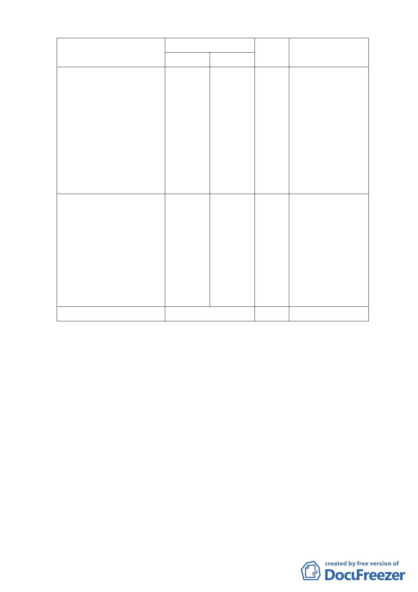

位置
中山區北安段三小段
300-1( 部 分 ) 、 302-3( 部
分 ) 、 302-9( 部 分 ) 、
301-6( 部 分 ) 、 306-9 、
306-10、311、312、313-1(部
分 ) 、 314( 部 分 )、 315( 部
分 ) 、 316( 部 分 )、 317( 部
分)、318、319、322地號等
16 筆部分土地
中山區北安段三小段
297-1、297-2、297-3、298、
300-1( 部 分 ) 、 301-6( 部
分 ) 、 302-3( 部 分 ) 、
302-9( 部 分 ) 、 313-1( 部
分 ) 、 314( 部 分 )、 315( 部
分)、316(部分)、317(部分)
地號等13 筆
合計
變更內容
原計畫 新計畫
面積
(公頃)
變更理由
高職
用地
機關用地
(供國防
部國防專
區使用)
2.71
為配合國防發展需
求，變更為國防專區
供國防部使用。
高職
用地
抽水站
用地
0.54
減少污水下水道下
游銜接管線負載，以
提高計畫區內集水
區排水保護標準，並
有效降低積、淹水風
險。
3.25
（二）都市防災規劃：
1、避難場所與疏散逃生動線
本計畫區東側北安國中及大直高中可作為本區之緊急避難
場所。當發生火災或地震時，人群可依循北安路疏散至空
曠地區及週邊之緊急避難場所。
2、救災動線
利用四周道路系統及基地內開放空間作為救災車輛及服務
車輛之路線。
3、消防救援系統
本計畫區附近防災救援單位為大直消防分隊，為避免區內
火災災害發生與延燒，應規劃設置阻隔緩衝帶，加強設置
-5-